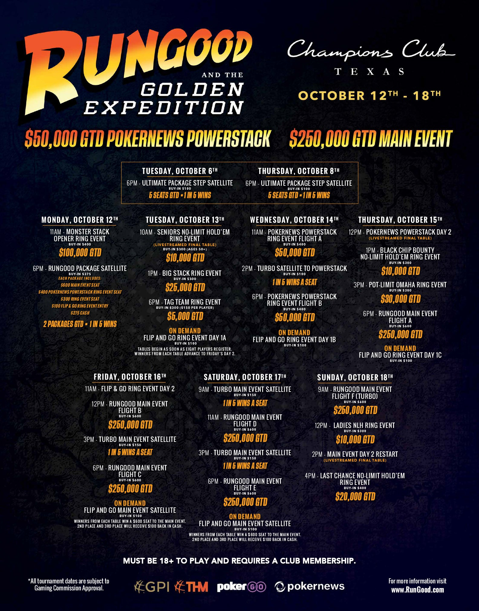
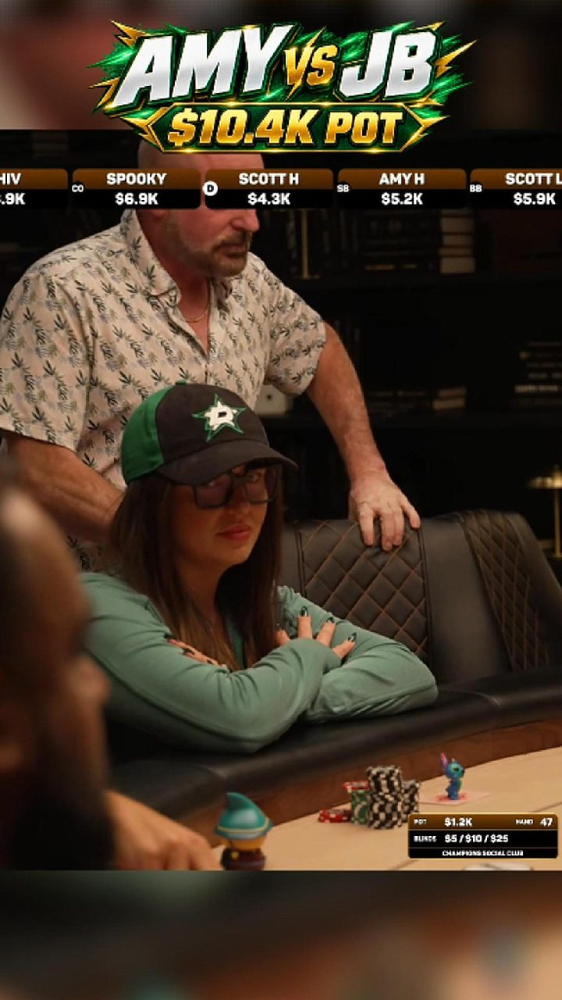

About The Sham Report
Texas poker.
Unfiltered.
Reporting that helps players understand the rooms, the games and the decisions that matter.
Founded by
Shomari Williams
Poker player, commentator and founder of The Sham Report.
Shomari has worked in the booth at Champions Social Club with Hayden Fortini. The Sham Report brings reporting and tournament structure information to Texas poker players.
What we cover

News
Reporting from the tables
Tournament reports and previews, with sources and context.
Explore →
Tournament intelligence
Understand the structure
Depth, pace and blind jumps help explain a tournament.
Explore →
Media
Hands and commentary
Existing reels from The Sham Report, linked to Facebook.
Explore →Editorial Policy
Draft — Pending Publisher Approval
The Sham Report is published by ShamGod Media LLC. Use primary records, official room/tour schedules, structure sheets, direct interviews and attributed reporting. Verify event identity, dates, price components and source currency before publication. Corroborate disputed claims and seek a response from affected parties. Record source links and verification timestamps internally; explain unresolved uncertainty publicly.
Read the full policy
Reporting presents verified facts and attributed claims. Structure data describes official tournament inputs and the TSR calculation. Commentary is clearly labeled interpretation. Imported social posts preserve original wording and original date with a separate website import date, fact checks and update notes; an old reaction must never appear as a current news alert. Allegations remain attributed allegations rather than findings.
Headlines must be supported by the story and avoid converting allegations into facts. Use the actual author’s byline; Shomari Williams is the author of the retained published reporting. Do not invent interviews, attendance, quotes, sources, credits or reporter names. Correct uncertain image attribution before publication.
AI may assist transcription, organization, drafting and structure analysis. An accountable human verifies factual claims, sources, quotations, rights and final copy before approval. Disclose material AI assistance in the published item. Automated calculator text is labeled Data-Based Structure Analysis — Automated from structure inputs, not personal experience. AI cannot supply firsthand experience or approve its own work.
Editorial Independence & Conflict-of-Interest Policy
Draft — Pending Publisher Approval
ShamGod Media LLC controls editorial decisions independently. Room and tour access, commentary work, advertising and sponsorship do not buy favorable coverage or TSR grades. Maintain an internal relationship register and disclose relevant financial, access, travel, hospitality and personal interests within affected stories.
Read the full policy
Shomari Williams has performed commentary work at Champions Social Club with Hayden Fortini and participates in live tournament play. Disclose relevant commentary engagements and personal tournament participation when covering those rooms, tours or events. Do not imply attendance at an event without a verified Experience Record. Record any compensation, hospitality or stake relevant to coverage before publisher approval.
Label advertising and sponsored placements clearly and separate them from editorial decisions. Sponsors may correct factual details through the same documented corrections process as anyone else; they cannot approve coverage, suppress criticism or alter a score.
A strict firewall protects TSR Score: official structure inputs and the published methodology determine the score and event classification determines the curve. No commercial relationship, player result, personal rating, room experience, advertiser request or publisher preference may change numeric math, bands or penalties. Changes require documented source evidence, versioned recalculation and revision history.
Corrections Policy
Draft — Pending Publisher Approval
Submit the article or grade URL/ID, disputed statement, proposed correction and supporting primary source through a confirmed publisher contact channel. Contact mailboxes are staged until routing is confirmed. The editor records the submission, acknowledges it through the available channel, checks evidence and seeks affected-party comment where appropriate. No unapproved response-time promise is made.
Read the full policy
Minor spelling, formatting and broken-link fixes are recorded internally without changing the substance. Substantive factual, attribution, context or scoring corrections require a visible dated correction explaining what changed and why. Preserve original publication date and record update date separately. Notify affected parties when appropriate.
For TSR revisions, retain before/after inputs, score, grade, event type, tier/curve, methodology version, source, reason, editor, approval and timestamp. Recompute using verified structure inputs; stored-score relettering must be identified. Classification changes do not silently rewrite historical claims. Resolve suspected duplicates with source identity checks before marking a record superseded.
Do not silently delete inconvenient reporting or score history. Retract or archive demonstrably unreliable material with an explanatory notice and retained internal record. Exceptional removals for legal/privacy obligations require a publisher decision and a retained audit explanation.
Internal correction history schema: {id, target_type: article|grade, target_id, submitted_at, submitted_by, disputed_statement, supporting_sources: [], severity: minor|substantive|retraction, reason, before: {}, after: {}, methodology_version, editor, approved_by, approved_at, status, public_note, recorded_at}. Preserve append-only revisions; public logs omit private submitter contact information.
Methodology: v1.1 (3-Curve A–D Scale)
Public methodology
TSR Score measures a tournament’s published structure, not profitability, room quality or personal experience. Scores are uncapped and are not percentages. Compare events on the same curve. Inputs must come from official structure sheets; record the source, verification timestamp and event identity. A structure grade does not verify that an event is still running.
Read the full methodology
Weekly Recurring uses Curve 1. Single-day Series strictly below $400 uses Curve 2. Series at $400 or above, multi-day Series and Major events use Curve 3. Unknown / Ambiguous withholds the letter grade. All curves have a D− floor. Unknown or ambiguous classifications receive no letter grade or tier: status needs_review, editorial status Needs Verification. A human must establish event type before publication. Legacy type fields weekly/series remain accepted; missing classification is never inferred from cost, title or calculator hash.
Internal technical reference
For each level, orbit cost O = small blind + big blind + stated ante. Do not assume an ante absent from the source. Sample levels 6, 10, 14 and 18. At least 18 levels are required. Growth denominator D = O10/O6 + O14/O10 + O18/O14.
Effective chips = starting stack + add-on chips. Find the last level whose orbit cost fits within effective chips. Playable depth T is the sum of all level minutes through that level. A per-level duration overrides the scheduled duration change, which overrides base minutes. Breaks are not playing minutes. Base depth is also reported without add-on chips. A duration change beyond the playable-depth window does not change depth.
Raw score = T / D. Final score = raw score − jump penalty. Scan every consecutive transition from level 2 through the full supplied schedule, including transitions beyond the depth window. A jump is material when its additional orbit cost is at least 5% of effective chips. Of those material jumps, take the largest percentage rise over the previous orbit: strictly above 60% subtracts 4 points; strictly above 100% subtracts 8 points. Penalties are not cumulative. Exactly 60% has no penalty; exactly 100% has the 4-point penalty. The numeric score formula and jump rules are unchanged in v1.1; curve selection and letter bands change.
Curves and letters
| Curve | A | B | C | D+ / D / D− |
|---|---|---|---|---|
| 1 — Weekly Recurring | ≥48 | ≥40 | ≥32 | ≥28 / ≥24 / <24 |
| 2 — Sub-$400 Single-Day Series | ≥55 | ≥44 | ≥34 | ≥30 / ≥25 / <25 |
| 3 — $400+ & Multi-Day Series | ≥85 | ≥65 | ≥50 | ≥45 / ≥40 / <40 |
The lowest letter is D−. See the complete modifier thresholds in Methodology v1.1. Even Bigger One $250K GTD scores 73.0: A+ on Curve 2 when single-day, B on Curve 3 if multi-day. Letter selection uses the unrounded score.
Buy-in accounting
buyin_parts stores total, prize_pool (per-entry contribution), fee, addons [{cost, chips, fee}], reentry_rules, guarantee, actual_prize_pool, entries and unique_players. Unknown values remain null, never invented zeroes. When total and fee are supplied and total ≥ fee, omitted prize_pool is total − fee. When both components are supplied, total is their sum; discrepancies above $1 are rejected. Add-on cost and chips are separate: only chips affect structural depth. Reentries and unique players are distinct counts. Guarantee is an advertised minimum; actual_prize_pool is the observed final total and must not be confused with per-entry contribution.
Entry vig = fee / total × 100. Engine effective vig = fee / (total + add-on cost) × 100. Separately declared add-on fees must be disclosed in accounting, not silently injected into the preserved engine. Fees/vig, guarantees and field size do not alter numeric score because this metric measures time and blind progression, not a complete economic evaluation. They must be reported alongside it for informed comparison.
Versioning, publication and audit
methodology_version is v1.1. Legacy v1.1 and tsr-2026.10-curve-by-type is accepted and normalized to v1.1. Retain original score, grade, curve, status, inputs, source, reason, actor and timestamp for every revision. Stored records without a full structure are labeled stored-score reletterings; they cannot establish a fresh numeric recomputation. The staged 20-record comparison is a review artifact, not permission to alter production. Resolve duplicate identities before superseding any record; preserve history and public substantive correction notes.
Automated output is labeled Data-Based Structure Analysis, with no attendance claim. Sham’s Take is separate firsthand commentary requiring verified played/attended/observed experience, publisher approval metadata and reviewed edited text. Experience ratings never feed the score.
TSR Score Revisions & Corrections Log
No publisher-approved revisions are published in this staging build. The v1.1 comparison remains a preview for review.
View staged regrade comparisonContact
Contact mailboxes (editor@, news@, corrections@theshamreport.com) are staged in configuration and will activate once mailbox routing is confirmed by the publisher.
Official social profiles
Official social profile links are hidden until verified in site configuration. Individual published Facebook reels remain linked on the Media page.